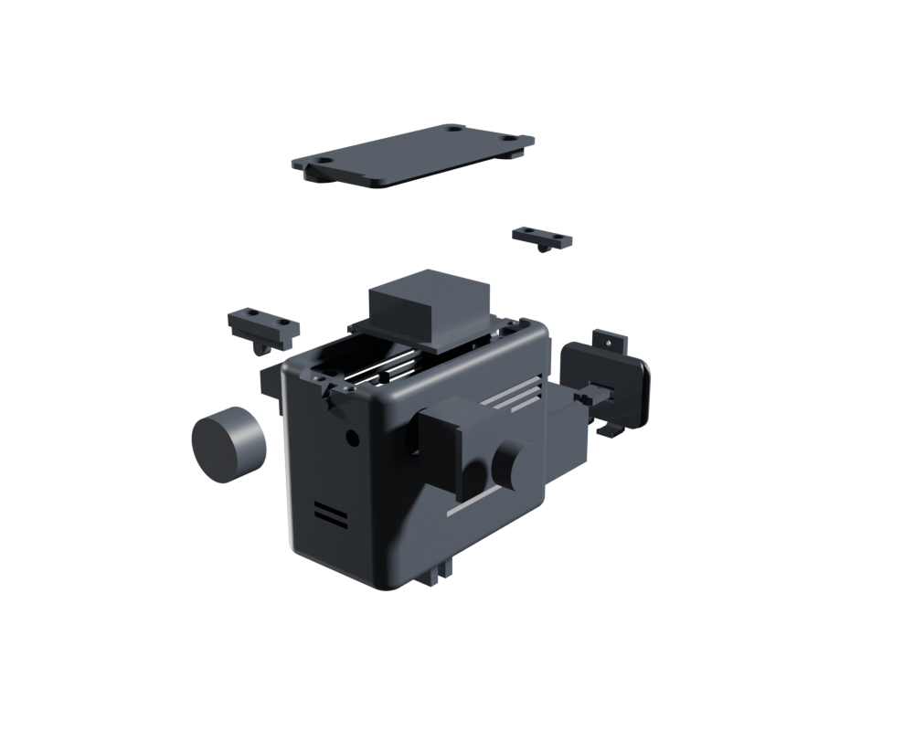

The hardware
The sender, in your hands.
A GoPro-form-factor transmitter that rides on the helmet. Drag to inspect it, or pull it apart to see what's inside.

drag to rotate · toggle assembled ↔ exploded
Every FPV builder expects a flight controller, a voltage regulator, a rat's nest of solder. There is none of it here — a radio, a camera, a battery, and a button, joined by three lever clamps. The restraint is the engineering.

A GoPro-form-factor transmitter that rides on the helmet. Drag to inspect it, or pull it apart to see what's inside.
drag to rotate · toggle assembled ↔ exploded
One exact figure each — the small, deliberate numbers a build quietly depends on. Sourced where sourced, modelled where marked, honest either way.
Everything above is the pitch. Everything below is the whole build — the chronological plan, the step-by-step assembly, the full bill of materials with dimensioned alternatives, the RF link-budget model, and the German-law reality. All install-free, all in the open.
Chronological, solder-free assembly with the three hardware-killer rules and the passive power/thermal doctrine.
Assembly stepsEach step: the handgrip, the reason, and the failure picture — Sender 850 as a fixed, printed-in shelf.
Bill of materialsEvery part with a link, plus §6 — dimensioned alternative components (VTX, camera, battery, antenna, switch) so you can substitute honestly.
RFThe donut-omni link-budget model closing 4 km — a calculation, not a measured test, with every assumption on the table.
Legal · DEFrequency, power and the licensing reality for flying a 1 W 5.8 GHz link in Germany — read before you transmit.
CADThe build123d model that generates the case from a single spec file, with watertight and wall-thickness gates.
Radio doesn't go through a person well (−10…−15 dB). Spin the jumper and watch each antenna's coverage move with the pose: the down patch aims a cone at the ground until the body swings it away; the donut omni fires down + up past the body. You screw on one per jump; the aimed, 4-way-diversity ground array holds the rest.
The real CAD, live in your browser — assembled, exploded, and the Mini, with dimension tags on the geometry itself. Plus the antenna decks that argue the RF doctrine.
The supporting figures — from "a dot in the sky" to the full 4 km link budget and the passive-thermal doctrine.